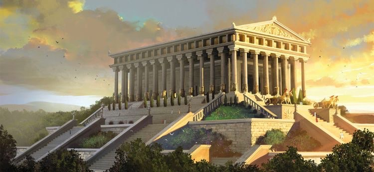
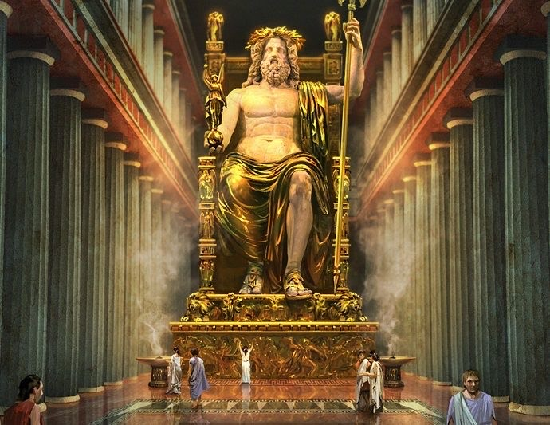
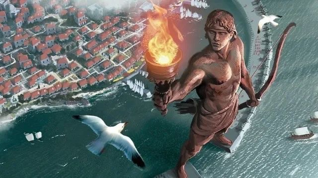
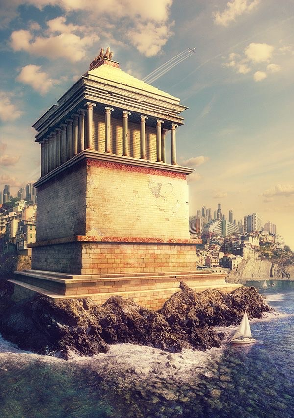
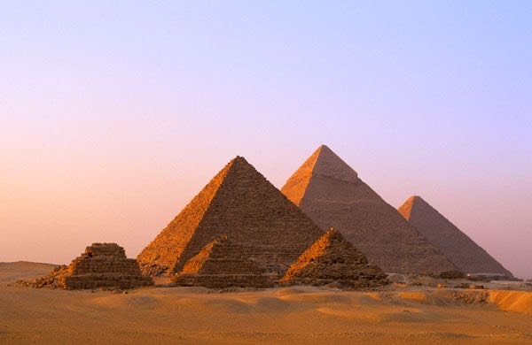
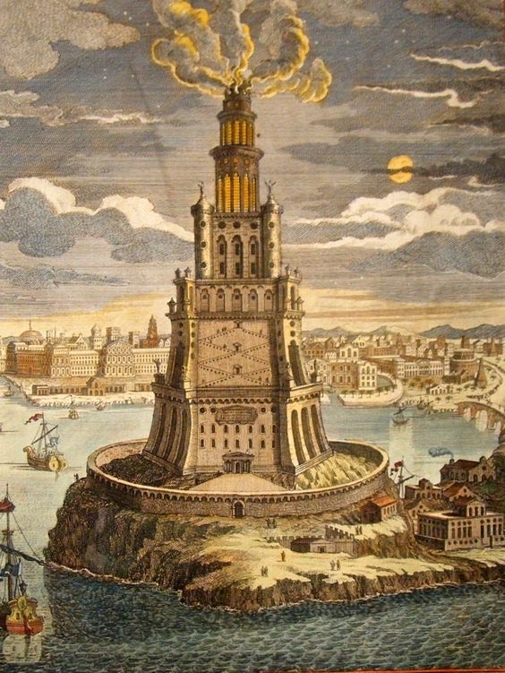
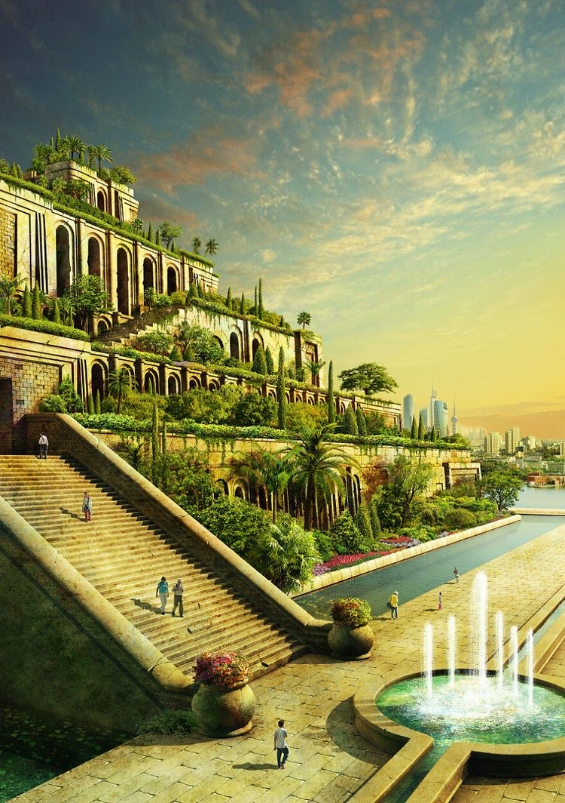

Седам светских чуда помињу се први пут око 450. п.н.е. на Херодотовом списку. Представљају врхунац људске креативности и генијалности. Заједно је споменуто свих 7 грађевина по први пут на списку филозофа Филона око 225. п.н.е. а потом Антипатера из Сидона око 130. п.н.е. Славе религију, митологију, моћ и науку.Уништена су сва чуда, сем једног. Постоји могућност да бар једно чудо уопште није постојало.
Артемидин храм

У Ефесу (данашњој Турској) је био грчки храм посвећен богињи Артемиди.
Артемидa је била грчка богиња лова, плодности и дивљине.
Храм је служио као религијско здање, али и као пијаца. Био је изграђен од белог мермера и украшен бронзаним статуама.
Постоји легенда о пропасти и спаљивању Артемидиног храма.
Недавним археолошким ископавањима на овој локацији откривени су дарови које су ходочасници посветили Артемиди.
Статуа Зевсу

Грађевина посвећена грчком богу Зевсу.
Извајао ју је антички вајар Фидија, најбољи вајар старог света.
Статуа је огромних размера – основа широка 6,5 метара, а висока 15 метара.
Био је направљен од разних драгоцених материјала, укључујући слоновачу и злато, приказује Зевса како седи на свом престолу.
Статуа је пребачена у Константинопољ, где је касније уништена.
Колос са Родоса

Гигантска статуа симбол је јединства народа који је насељавао Родос.
Посвећена грчком богу сунца Хелиосу.
Направљена од бронзе и челика била је висока 30 метара.
Ова статуа је опстала само кратак период, уништио ју је јак земљотрес који је погодио Родос и кип се преломио у висини колена.
Колосово најболније место- колено.
Маузолеј у Халикарнасу

Данашњи Бодрум, град који се у време старе Грчке звао Халикарнас.
Представља надгробни споменик персијског краља Маузола.
Висок 50м, а на његовом врху су се налазиле кочије које вуку 4 коња.
Грађевина је постојала од 350. године п.н.е. па све до 15. века.
Оно што издваја грађевину је чињеница да није посвећен ниједном од богова старе Грчке.
Срушен када га је погодио снажан земљотрес, као и Колос са Родоса.
Витезови у 15. веку године га у потпуности демонтирају и користе материјал у изградњи свог замка.
Велике пирамиде

Велике пирамиде чине три монументалне грађевине које се разликују од осталих египатских пирамида.
Налазе се у Египту, близу Каира на платоу Гизе.
Биле су гробнице некадашњих египатских владара.
У оквиру комплекса се налазе Кеопсова, Кефренова и Микеринова пирамида.
Представљају најочуваније светско чудо античког света.
Данас су значајна туристичка атракција.
Фарос у Александрији

Птолемеј I Сотер преузео је власт над Египтом и узео Александрију за престоницу.
Саграђен на острву Фарос око 280 п.н.е. друга је највиша грађевина коју је човек створио на свету, после пирамида.
Једини је од светских чуда који је имао практичну примену.
Омогућавао је безбедан повратак бродова у луку Александрију.
Постоји легенда о спаљивању непријатељских бродова.
Светионик је оштећен у неколико земљотреса и почетком 15. века тотално уништен.
Посвећен боговима спаситељима, Птоломеју Сотеру и његовој жени Береници.
Висећи вртови из Вавилона

Протезали су се дуж планине изнад Вавилона.
Од дрвећа могли би се наћи чемпрес, палма, храст, јасен, врба и јела.
Верује се да су вртови заливани водом из Еуфрата.
Зидови од цигала били су непропусни.
Сађени су у више нивоа и налазили су се на терасама.
Вртове су одржавали бројни робови.
Археолошке ископине вртова се налазе у данашњем Ираку.